De novo design of a fluorescence-activating β-barrel
Introduction
hierarchical grid-based search method to simultaneously optimize the rigid body placement of DFHBI in these cavities and the identities of the surrounding amino acids for high shape and chemically complementary binding. The designs have high structural accuracy and bind and fluorescently activate DFHBI in vitro and in E. coli, yeast and mammalian cells. This de novo design of small molecule binding activity, using backbones custom built to bind the ligand, sets the stage for design of increasingly sophisticated ligand binding proteins, sensors, and catalysts not limited by the backbone geometries available in known protein structures.
There have been considerable recent advances in designing protein folds from scratch 1,2 , as well as redesigning already existing native scaffolds to bind small molecules [3][4][5] , but two outstanding unsolved challenges remain. The first is the de novo design of all-β proteins, which is complicated by the tendency of β-strands and sheets to associate intermolecularly to form amyloid like structures if their register is not perfectly controlled 6 . The second is the design of protein backbones customized to bind small molecules of interest, which requires precise control over both backbone and sidechain geometry 5 , as well as balancing the often opposing requirements of protein folding and function 7 . Success in developing such methods would reduce the longstanding dependency on natural proteins by enabling protein engineers to craft new proteins optimized to bind chosen small-molecule targets, and lay a foundation for de novo design of proteins customized to catalyze specific chemical reactions.
Principles for designing β-barrels β-barrels are single β-sheets that twist to form a closed structure in which the first strand is hydrogen bonded to the last 8 . Anti-parallel β-barrels are excellent scaffolds for ligand binding, as the base of the barrel can accommodate a hydrophobic core to provide overall stability, and the top of the barrel can provide a recessed cavity for ligand binding 9 , often flanked by loops that can contribute further binding affinity and selectivity 10 . However βsheet topologies are notoriously difficult to design from scratch, with no reported success to date, although several descriptive parametric models of β-barrels have been proposed [11][12][13] . We first set out to address this challenge by parametrically generating regular arrangements of 8 anti-parallel β-strands using the equations for an elliptic hyperboloid of revolution (adapted from 14 , Extended Data Fig. 1a). β-barrels are characterized by their shear number 'S' -the total shift in strand registry between the first and last strand -which determines the hydrophobic packing arrangement and the diameter of the barrel (Supplementary Methods) 15,16 . We selected a shear number of S=10 because it is difficult to achieve good core packing for S=8 (the barrel has a smaller diameter and the Cα-Cβ vectors point directly at each other), and S=12 results in a cavity too large to fill with sidechains (Extended Data Fig. 1b-d). We generated ensembles of hyperboloids by sampling the elliptical parameters and the tilt of the generating lines with respect to the central axis around ideal values computed for S=10, and then placed Cαs on the hyperboloid surface (Fig. 1a; Supplementary Methods). As found in earlier simulation work 17 , backbones generated with constant angles between strands could not achieve perfectly regular hydrogen bonding. To resolve this problem, we introduced force-field guided variation in local twist by gradient based minimization. We selected the backbones with the most extensive inter-strand hydrogen bonding, connected the strands with short loops and carried out combinatorial sequence optimization to obtain low energy sequences. Synthetic genes encoding 41 such designs were produced and the proteins expressed in E. coli. Almost all were found to be insoluble or oligomeric; none of this first set of 41 designs were monomeric with an all-β circular dichroism spectrum (Supplementary Table 2).
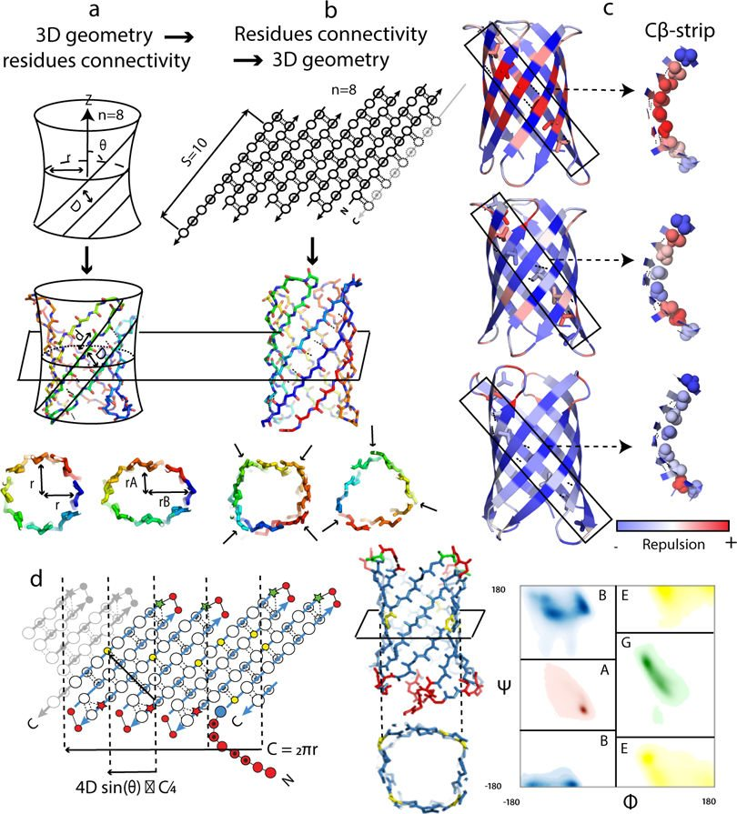
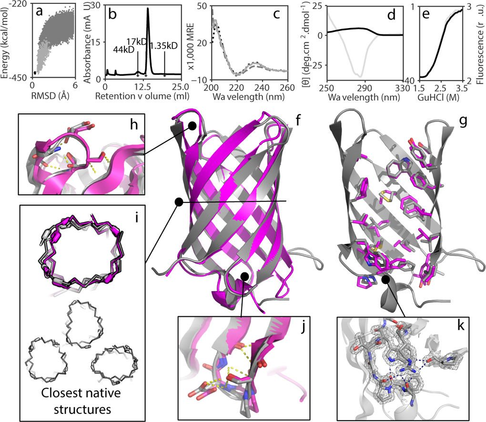
In considering the possible reasons for the failure of the initial designs, we noted that many of the backbone hydrogen bond interactions on the top and bottom of the barrels were distorted or broken (Extended Data Fig. 1e,f). To investigate the origins of this distortion, we experimented with three alternative approaches to generating uniform β-barrel backbones lacking loops and with valine at every position as a place-holder (Supplementary Methods). In all cases, we observed breaking of hydrogen bond interactions following structure minimization with Rosetta relaxation protocol (Extended Data Fig. 2a), suggesting there is strain inherent to the closing of the curved β-sheet on itself. To identify the origin of this strain, we repeated the relaxation after imposing strong constraints on the hydrogen bond interactions to prevent them from breaking. As illustrated in Fig. 1c, the strain manifested in two places. First, steric clashes build up along strips of side-chains in the directions of the hydrogen bonds, perpendicularly to the direction of the β-strands ("Cβ-strips", Fig. 1c). Second, a number of residues acquired unfavorable left handed twist (Extended Data Fig. 2b,c; the chirality of the peptide backbone favors right handed twist). To reduce the strain arising from steric clashes between Cβ atoms, and from the local left handed twist, we replaced the central valine residue of each Cβ-strip with a glycine (which are normally disfavored in β-sheets 18 ). The achiral glycine can have a left-hand twist without disrupting the β-sheet hydrogen bond pattern 15,19 and lacks a Cβ atom, reducing the steric clashes within Cβ-strips (Fig. 1c, middle). The backbones of most of these glycine residues shifted to the positive Φ torsion bin after minimization to form torsional irregularities in the β-sheet ("glycine kinks" 15 , Extended Data Fig. 2d-e).
Based on these observations, we hypothesized that large local deviations in ideal β-strand twist are necessary to maintain continuous hydrogen bond interactions between strands in a closed β-barrel, and hence that a parametric approach assuming uniform geometry was not well suited to building such structures. Therefore, we chose to build β-barrel backbones starting from a 2D map specifying the peptide bonds, the backbone torsion angle bins 20 , and the backbone hydrogen bonds (Fig. 1b). In contrast to parametric backbone design, which may be viewed as "3D to 2D" approach as a 3D surface is generated and then populated with residues, this alternative strategy proceeds from 2D to 3D and can readily incorporate local torsional deviation. We generated 3D protein backbones using Rosetta Monte Carlo structure generation calculations starting from an extended peptide chain 21 , guided by torsional and distance constraints from the 2D map.
We found that we could control the volume and the 3D shape of the β-barrel cavity by altering the placement of glycine kinks in the 2D map. Such kinks dramatically increase local β-sheet curvature, forming corners in an otherwise roughly circular cross-section (Extended Data Fig. 2f,g). We chose to design a square barrel shape and created four corners in the β-sheet by placing five glycine kinks to un-strain the five Cβ-strips and one glycine kink to correct the twist of the longest hairpin (Fig. 1d, Supplementary Methods & Extended Data Fig. 3a). With this choice, the resulting 3D backbones have a large interior volume suitable for a ligand-binding cavity. When such backbones were built with canonical type I' β-turns connecting each β-hairpin, we observed steric strain at the extremities of the Cβstrips (Fig. 1c, bottom) and disruption of hydrogen bond interactions following structure relaxation (Extended Data Fig. 3e). This likely arises because the considerable curvature at the glycine kinks requires that the β-hairpins paired with it (dashed vertical line in Extended Data Fig. 3b) must have greater right handed twist than can be achieved with canonical βhairpins. We reasoned that accentuated right-handed twist could be achieved by incorporating β-bulges -disruptions of the regular hydrogen bonding pattern of a βsheet 2,22,23 . Indeed, we found that strategic placement of β-bulges on the bottom of the barrel (defined as the side of the N-and C-termini) and bulge-containing β-turns 22 on the top of the barrel eliminated steric strain and stabilized the hydrogen bonds between the βstrand residues flanking the turns (Extended Data Fig. 3e,f). To tie together the bottom of the barrel, we introduced a "tryptophan corner" 24,25 by placing a short 3-10 helix followed by a glycine kink and a Trp at the beginning of the barrel, and an interacting Arg at the Cterminus (Extended Data Fig. 3g-j).
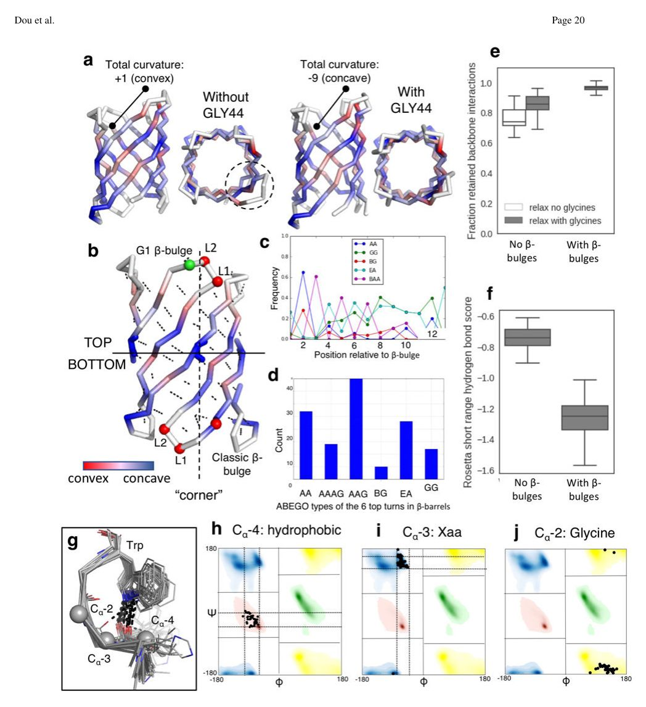
500 backbones were generated from the 2D map incorporating the above features (see Methods), and Rosetta flexible backbone sequence design calculations were carried out to identify low energy sequences for each backbone. Four designs with low energy and backbone hydrogen bonding throughout the barrel were selected for experimental characterization (Extended Data Fig. 4a). The sequences of these designs are not related to those of known native proteins with BLAST E-values > 0.1, and fold into the designed structure in silico (Fig. 2a). Synthetic genes encoding the designs were expressed in E. coli. Three of the designs were expressed in the soluble fraction and purified; two had characteristic β -sheet far-UV circular dichroism (CD) signal (Fig. 2; Extended Data Fig. 4b). Size-exclusion chromatography (SEC) coupled with multi-angle light scattering (MALS) showed that one was a stable monomer (BB1) and the other (BB2) a soluble tetramer (Extended Data Fig. 4c).
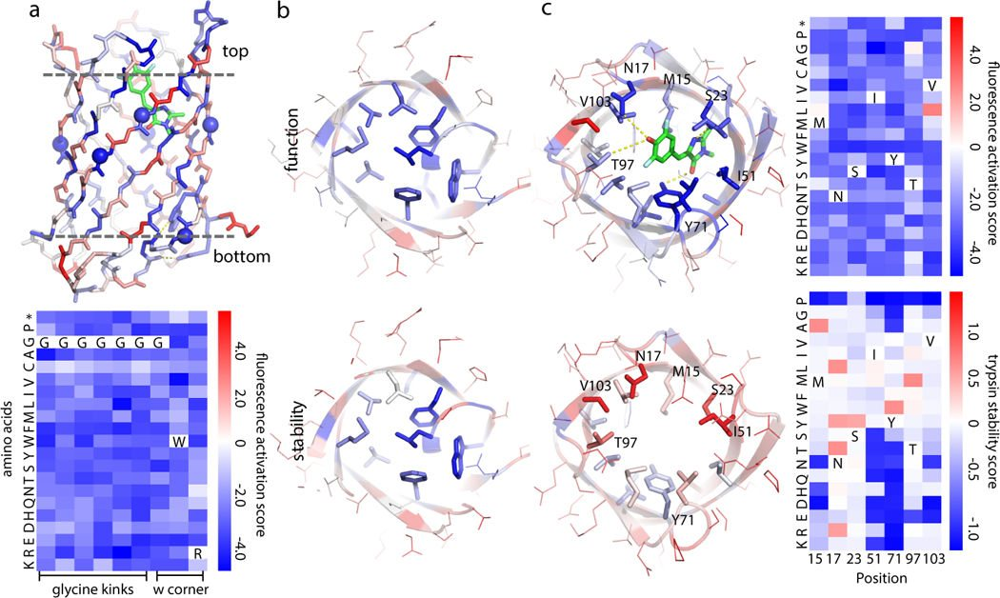
BB1 exhibited a strong near-UV signature suggesting an organized tertiary structure (Fig. 2d). The design was stable at 95°C, and cooperatively unfolded in guanidine denaturation experiments (Fig. 2e). The crystal structure of BB1 solved at 1.6Å resolution was very close to the design model (1.4Å backbone RMSD over 99 of 109 residues; Extended Data Fig. 4d-f). Essentially all of the key features of the design model are found in the crystal structure (Fig. 2f-k). The barrel cross-section in the crystal structure is very similar to that of the design model, with an overall square shape with corners at the glycine kinks. Natural βbarrel crystal structures do not have this shape; the cross section of the closest structure match in the PDB is shown in Fig. 2i. All 7 designed β-turns and β-bulges are correctly recapitulated in the crystal structure (Fig. 2h, j), along with the 3-10 helix and tryptophan corner (Fig. 2k).
Results
Design of small-molecule binding β-barrels
Having determined principles for de novo design of β-barrels, we next sought to design functional β-barrels with binding sites tailored for a small molecule of interest. We chose DFHBI (Fig. 3a, left, green), a derivative of the intrinsic chromophore of GFP, to test the computational design methods. Due to its internal torsional flexibility in solution, DFHBI does not fluoresce unless it is constrained in the planar Z conformation 26,27 . We sought to design protein sequences that fold into a stable β-barrel structure with a recessed cavity lined with side-chains to constrain DFHBI in its fluorescent planar conformation. We chose to take a three step approach: (1) de novo construction of β-barrel backbones, (2) placement of DFHBI in a dedicated pocket, and (3) energy-based sequence design. For the first step, we stochastically generated 200 β-barrel backbones based on the 2D map described above (Extended Data Fig. 5b-d).
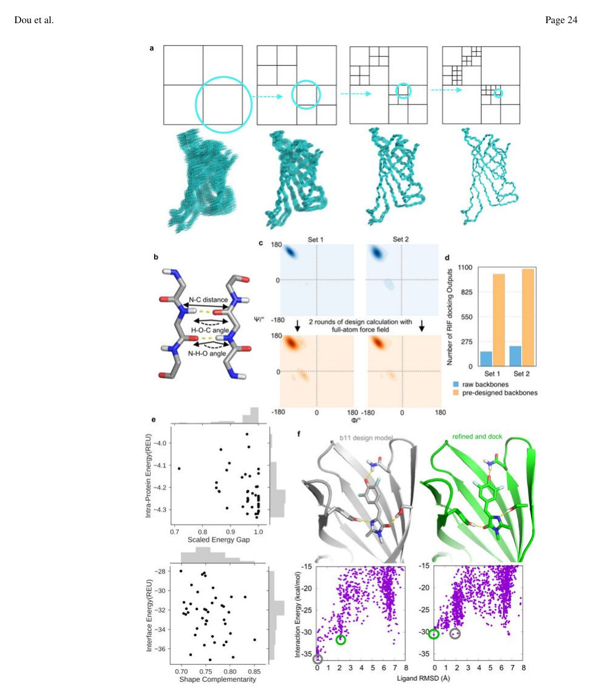
The placement of ligand in the binding pocket requires sampling of both the rigid body degrees of freedom of the ligand, and the sequence identities of the surrounding amino acids that form the binding site. Because of the dual challenges associated with optimization of structure and sequence simultaneously, most approaches to designing ligand-binding site to date have separated sampling into two steps: rigid body placement of the target ligand in the protein binding pocket followed by design of the surrounding sequence 4,5,28 . This two-step approach has the limitation that optimal rigid body placement cannot be determined independently of knowledge of the possible interactions with the surrounding amino acids. The RosettaMatch method 29 can identify rigid body and interacting residue placements simultaneously, but is limited to a small number of pre-defined ligand interacting residues 3 . We addressed these challenges with a new "Rotamer Interaction Field (RIF)" docking method that simultaneously samples over rigid body and sequence degrees of freedom. RIF docking first generates an ensemble of billions of discrete amino acid side chains that make hydrogen-bonding and non-polar hydrophobic interactions with the target ligand (Fig. 3a, right). Then, scaffolds are docked into this pre-generated interacting ensemble using a gridbased hierarchical search algorithm (Extended Data Fig. 5a). We used RIF docking to place DFHBI into the upper half of the β-barrel scaffolds, resulting in 2,102 different ligand/ scaffold pairs with at least four hydrogen bonding and two hydrophobic interactions (Fig. 3a).
To identify protein sequences that not only buttress the ligand-coordinating residues from the RIF docking but also have low intra-protein energies to drive protein folding, we developed and applied a Monte Carlo-based sequence design protocol that iterates between 1) fixed-backbone design around the ligand-binding site to optimize ligand interacting energy and 2) flexible-backbone design for the rest of protein optimizing the total complex energy (Fig. 3b). Forty-two designs with large computed folding energy gaps and low energy intra-protein and protein-ligand interactions were selected for experimental characterization, plus an additional 14 disulfide bonded variants (Extended Data Fig. 5e). Ligand docking simulations following extensive structure refinement revealed that due to the approximate symmetry of the hydrogen bonding pattern of DFHBI, many of the designed binding pockets could accommodate the ligand in two equally-favorable orientations (Extended Data Fig. 5f).
Synthetic genes encoding the 56 designs were obtained and the proteins expressed in E. coli. Thirty-eight of the proteins were well expressed and soluble; SEC and far-UV CD spectroscopy showed that 20 were monomeric β -sheet proteins (Supplementary Table 3). Four of the oligomer-forming designs became monomeric upon incorporation of a disulfide bond between the N-terminal 3–10 helix and the barrel β -strands. The crystal structure of one of the monomeric designs (b10) was solved to 2.1Å, and was found to be very close to the design model (0.57Å backbone RMSD, Fig. 3c). The upper barrel of the crystal structure maintains the designed pocket, which is filled with multiple water molecules (Fig. 3c, & Extended Data Fig. 6b). Thus, the design principles described above are sufficiently robust to allow the accurate design of potential small molecule binding pockets.
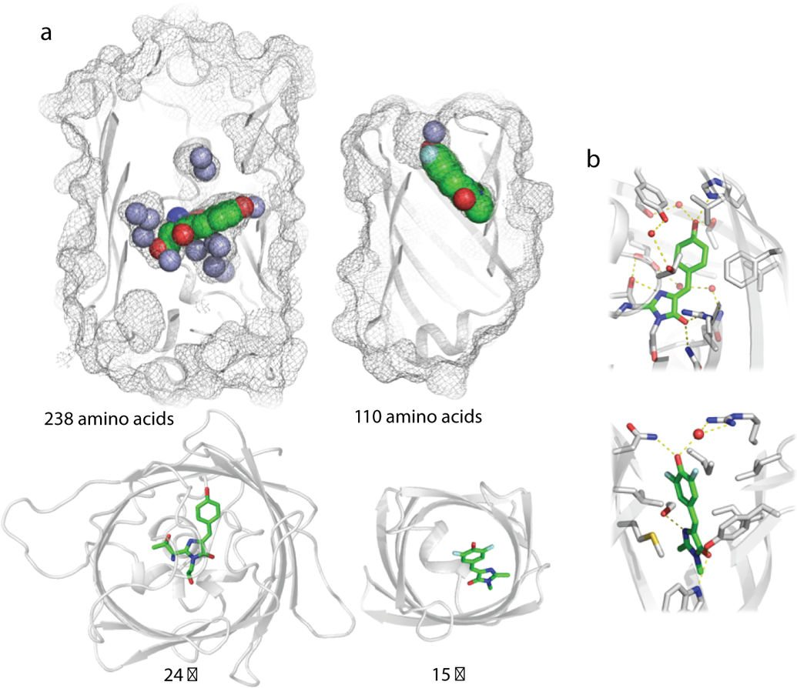
Two of the 20 monomeric designs -b11 and b32 -were found to activate DFHBI fluorescence by 12-and 8-fold with binding dissociation constants (K D ) values of 12.8 and 49.8 μM, respectively (Extended Data Fig. 6f). Knockout of interacting residues in the designed binding pocket eliminated fluorescence (Extended Data Fig. 6g). The ligand-binding activity comes at a substantial stability cost as almost half of the barrel is carved out to form the binding site: while the nonfunctional BB1 design does not temperature denature, both b11 and b32 undergo reversible thermal melting transitions (Extended Data Fig. 6e). b11 contains a disulfide bond while the parent design lacking the disulfide (b38) is not a monomer (Extended Data Fig. 6c,d). We sought to improve the binding interactions by redesigning β-turns around the ligand binding site (Supplementary Table 6). b11L5F with a 5-residue fifth turn activated DFHBI fluorescence by 18-fold with a K D value of 7.5 μM (Extended Data Fig. 6f, h).
The sequence determinants of b11L5F fold and function were investigated by assaying the effect of each single amino acid substitution (19*110 = 2,090 in total) on both protein stability 30 and DFHBI activation on the yeast cell surface. The function (fluorescence activation) and stability (proteolysis resistance) landscapes have similar overall features consistent with the design model, with residues buried in the designed β-barrel geometry much more conserved than surface exposed residues (Fig. 4a & Extended Data Fig. 7a,b). The function landscape suggests the geometry of the designed cavity is critical to activating DFHBI fluorescence: the key sequence features that specify the geometry of the cavity -the glycine kinks and the tryptophan corner -are strictly conserved (Fig. 4a). Among the seven coordinating residues from RIF docking, only a single substitution (V103L) increased fluorescence (Fig. 4c, upper panel). Whereas the structure and function landscapes were very similar at the bottom of the barrel (Fig. 4b), there was a striking trade-off between stability and function at the top of the barrel around the designed binding site (Fig. 4c): many substitutions that stabilize the protein drastically reduce fluorescence activation (Fig. 4c, right). This bottom/top contrast indicates that success in de novo design of fold and function requires a substantial portion of the protein (in our case, the bottom of the barrel) to provide the driving force for folding as the functional site will likely be destabilizing.
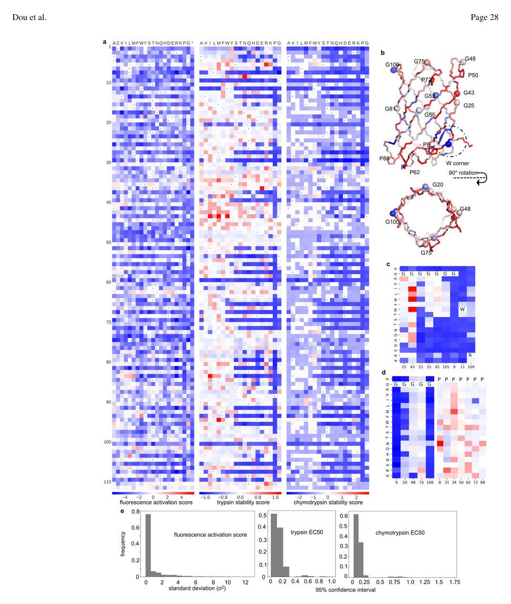
Guided by the comprehensive protein stability and fluorescence activation maps, we combined substitutions at three positions that improved function without compromising stability (V103L, V95AG and V83ILM; Extended Data Fig. 8a,b), and obtained variants with 10-fold higher DFHBI fluorescence that form stable monomers without a disulfide bond (b11L5F.1; Extended Data Fig. 8c). The crystal structure of one of the improved variants (b11L5F_LGL; mutant 83L/95G/103L in Extended Data Fig. 8b) was solved to 2.2Å and was very close to the design model with the majority of the buried side chains adopting the designed conformation (Extended Data Fig. 9a–d). However, the electron density in the binding site could not be resolved, consistent with the multiple DFHBI binding modes suggested by the docking calculations (Extended Data Fig. 9e–g; docking calculations in Extended Data Fig. 5f). A second round of computational design calculations was carried out to favor a specific binding mode by optimizing the protein-ligand interactions in the lowest energy docked conformation, and to rearrange the hydrophobic packing interactions in the bottom of the barrel now freed from the disulfide bond. Five designs predicted by ligand docking calculations to have a single ligand binding conformation were experimentally tested and three showed increased fluorescence activity, the best of which increased the fluorescence by approximately 1.4-fold (b11L5F.2; Extended Data Fig. 8d–e). Screening of two combinatorial libraries (based on b11L5F.1 and b11L5F. 2) incorporating additional beneficial substitutions identified in the b11L5F stability and function maps yielded variants with another 1.5-to-2 fold increased fluorescence and improved protein stability (Extended Data Fig. 8f–h & 10a,b). We refer to these minifluorescence-activating proteins as mFAPs in the remainder of the text; mFAP0 and mFAP1 are variants of b11L5F.2, and mFAP2 of b11L5F.1. mFAP1 and mFAP2 activate 0.5 μM DFHBI fluorescence by 80- and 60- fold with K D values of 0.56 μM and 0.18 μM, respectively (Fig. 5d).
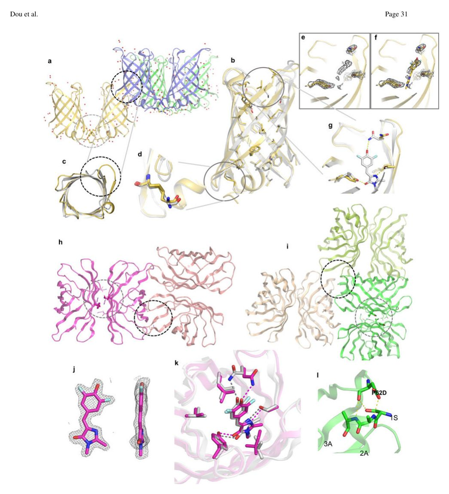
The 1.8Å and 2.3Å crystal structures of mFAP0 and mFPA1 in complex with DFHBI were virtually identical to the design models with an overall backbone RMSD of 0.91Å and 0.64Å (Fig. 5a-c & Extended Data Fig. 9h,i). DFHBI is in the planar Z conformation with unambiguous electron density in both structures (Fig. 5a & Extended Data Fig. 9j). In addition to three designed hydrogen bonds, a water molecule was found to interact with the solvent exposed phenol group in DFHBI (Fig. 5b). The DFHBI binding modes in the crystal structures are nearly identical to the lowest-energy docked conformations used in the second round of design calculations, with all-atom RMSD of 0.12Å and 0.35Å respectively (Fig. 5c & Extended Data Fig. 9k). Three mutations shared by mFAP0 and mFAP1 in the bottom barrel (P62D, M65L and L86MorY, Extended Data Fig. 10b) likely stabilize the protein by helical capping and subtle hydrophobic rearrangements (Extended Data Fig. 9l). The M27W mutation in mFAP1 introduced an additional hydrogen bond to DFHBI that likely produces the 5nm red-shift in its fluorescence spectra (Fig. 5d; Extended Data Fig. 10c,e). mFAP2, based on b11L5F.1, has a 6-residue insertion in the seventh β-turn predicted to form multiple intra-loop hydrogen bonds (Extended Data Fig. 10b, right).
Data Fig. 10 :. Mapping of mutations introduced into b11 to yield the final brighter variants, biophysical characterization of mFAP1&2, and epifluorescent images. a, Sequence alignment of b11-based DFHBI-binding fluorescence-activating proteins
In vivo fluorescence activation
To determine whether the designed DFHBI-binding fluorescence-activating proteins function in living cells, we imaged mFAP1-and mFAP2-DFHBI complexes in E.coli, yeast, and mammalian cells by conventional wide field epifluorescence microscopy and confocal microscopy. Both mFAP1 and mFAP2 activated fluorescence in less than 5 minutes following addition of 20µM DFHBI. Cytosolic expression of mFAPs in E.coli and mammalian cells resulted in clear fluorescence throughout the cells (Fig. 5e & Extended Data Fig. 10f). Yeast cells with mFAPs targeted to the cell surface displayed fluorescence in a thin region outside of the plasma membrane (Fig. 5f & Extended Data Fig. 10g). Fusion of the mFAPs to a mitochondria-targeting signal peptide and to the ER localized protein sec61β resulted in fluorescence tightly localized to these organelles in both fixed (Fig. 5g&h) and living cells (Supplementary Videos) with a distribution comparable to that of sec61β-GFP. The quantum yields of mFAP1 and mFAP2 in complex with DFHBI are 2.0% and 2.1%, respectively (Extended Data Fig. 4g, comparable with Y-FAST:HBR 31 ). The brightness of de novo mFAPs in complex with DFHBI is about 35-fold lower than that of eGFP; there is still considerable room for improving their fluorescence activity.
Conclusion
It is instructive to compare the structures of our designed fluorescence-activating proteins with those of natural fluorescent proteins (Fig. 6). Both are β-barrels, and have similar chromophores, but our designs have less than half the residues and narrower barrels connected with short β-turns (Fig. 6a). In both cases, specific protein-chromophore interactions reduce energy dissipation from intra-molecular motions 32 , but the hydrogen bonding and hydrophobic packing around DFHBI is different from GFP and is tailored to the smaller and simpler β-barrel (Fig. 6b). The precise structural control enabled by computational design, together with the greater exposure of the chromophore, may prove useful for fluorescence-based imaging and sensing applications.
The comparison in figure 6 highlights the two primary advances in this paper: the first successful de novo design of a β-barrel, and the first full de novo design of a small molecule binding protein. The first advance required the elucidation of general principles for designing β-barrels, notably the requirement for systematic symmetry breaking to enable hydrogen bonding throughout the barrel structure. These principles, identified by pure geometric considerations coupled with computer simulations following failure of the initial parametric design approach, are borne out by both the crystal structures and the sequence fitness landscapes. The second advance goes considerably beyond the design of ligand binding proteins and catalysts to date, which has relied on repurposing naturally occurring scaffolds. The three step approach described in this paper -first, identifying the basic principles required for specifying a general fold class, second, using these principles to generate a family of backbones with pocket geometries matched to the ligand or substrate of interest, and third, designing complementary binding pockets buttressed by a deeper hydrophobic core -provides a general solution to the problem of de novo design of ligand-binding proteins. This generative approach allows the exploration of an effectively unlimited set of backbone structures with shapes customized to the ligand or substrate of interest and, equally importantly, provides a critical test of our understanding of the determinants of folding and binding that goes well beyond descriptive analyses of existing protein structures.
Methods
In the constraint file, each backbone hydrogen bond was described as a set of distance and angle constraints (Extended Data Fig. 5b). A set of distance and torsion constraints specific to the tryptophan corner were added to the constraint file (Extended Data Fig. 3g-j, and Supplementary Methods). In the blueprint file, a torsion angle bin was attributed to every residue in the peptide chain, according to Rosetta's ABEGO nomenclature. After minimizing the assembled backbones using Rosetta centroid scoring function with imposed constraints, our protocol output an ensemble of poly-valine β-barrel backbones with defined glycine kinks, β-bulges, β-turns and the backbone of the tryptophan corner. The main challenge in building scaffolds with this protocol is to achieve a good balance between the constraints weight, structure diversity and backbone torsion angles. For this work, we circumvented this problem by performing two additional rounds of sequence design calculation to regularize and prepare scaffolds for designing ligand binding β-barrels (Extended Data Fig. 5b-d and Supplementary Methods).
Sequence design of nonfunctional β-barrels.
500 poly-valine backbones with good hydrogen bonds and torsion angles were selected as input for Rosetta sequence design. Low energy sequences for the desired β-barrel fold were optimized over several rounds of flexible-backbone sequence design. We employed a genetic algorithm to effectively search the sequence space: each parent backbone was used as input to produce 10 designs through individual Monte Carlo searching trajectory. The best ~10% of the output designs were selected based on the evaluation for total energy, backbone hydrogen bonds, backbone omega and phi/psi torsion angles and hydrophobic packing interactions. The selected models were used as inputs for the next round of design calculation. After 12 rounds of design and selection, no more improvements on the backbone quality metrics were observed (an indication of searching convergence). We then performed a backbone refinement by minimization in Cartesian space and a final round of design calculation (backbone flexibility was limited in torsion space for all the design calculation). The final top designs converged to the offspring of 3 initial backbones, sharing 36% to 99% sequence identity. For every parent backbone, one or two designs with the best hydrophobic packing interactions were selected for experimental characterization. The four designs (BB1-4) share 46% to 72% sequence identity.
DFHBI is short for chemical name ((Z)-4-(3,5-difluoro-4-hydroxybenzylidene)-1,2dimethyl-1H-imidazol-5(4H)-one).
De novo design of DFHBI-binding β-barrels consists of three steps: 1) generation of ensembles β-barrel scaffolds (see above), 2) ligand placement by RIF docking and 3) sequence design. 200 input scaffolds were generated in step 1 and used in the following steps. Example scripts and command lines are available in Supplementary Data.
Rotamer Interaction Field (RIF) docking.
The Rotamer Interaction Field (RIF) docking method performs a simultaneous, high-resolution search of continuous rigid-body docking space as well as a discrete sequence design space. The search is highly optimized for speed and in many cases, including the application presented here, is exhaustive for given scaffold/ligand pair and design criteria.
RIF docking comprises two steps. In the first step, ensembles of interacting discrete side chains (referred to as "rotamers") tailored to the target are generated. Polar rotamers are placed based on hydrogen bond geometry while apolar rotamers are generated via a docking process and filtered by an energy threshold. All the RIF rotamers are stored in ~0.5Å sparse binning of the 6-dimensional rigid body space of their backbones, allowing extremely rapid lookup of rotamers that align with a given scaffold position. To facilitate the following docking step, RIF rotamers are further binned at 1.0Å, 2.0Å, 4.0Å, 8.0Å and 16.0Å resolutions. In the second step, a set of β-barrel scaffolds is docked into the produced rotamer ensembles, using a hierarchical branch-and-bound search strategy (see Extended Data Fig. 5a). Starting with the coarsest 16.0Å resolution, an enumerative search of scaffold positions is performed: the designable scaffold backbone positions are checked against the RIF to determine whether rotamers can be placed with favorable interacting scores. All acceptable scaffold positions (up to a configurable limit, typically 10 million) are ranked and promoted to the next search stage. Each promoted scaffold is split into 2 6 child positions in the 6D rigid body space, providing a finer sampling. The search is iterated at 8.0Å, 4.0Å, 2.0Å, 1.0Å and 0.5Å resolutions. A final Monte Carlo-based rotamer packing step is performed on the best 10% of rotamer placements to find compatible combinations.
Sequence design of DFHBI-binding β-barrels.
A total number of 2,102 DFHBI-scaffold pairs from RIF docking were continued for Rosetta sequence design. Our design protocol iterated between a fixed-backbone binding site design calculation and a flexible-backbone design for the rest of scaffold positions. Three variations of this design protocol were used during the sequence optimization. In the initial two rounds of design calculation, RIF rotamers (interacting residues placed during RIF docking) were fixed to maintain the desired ligand coordination. Repacking of RIF rotamers was allowed in the final round of design calculation, assuming that the binding sites have been optimized enough to retain these interactions. A Rosetta mover that biases aromatic residues for efficient hydrophobic packing were added after the first round of design. A similar selection approach and Cartesian minimization as described for nonfunctional sequence design were used to propagate sequence search and refine the design models. Evaluations on ligand binding interface energy and shape complementarity were added to the selection criteria. The final set of designs were naturally separated into clusters based on their original RIF docking solutions. For each cluster, a sequence profile was generated to guide an additional two rounds of profile-guided sequence design. 42 designs from 22 RIF docking solutions (20 input scaffolds) were selected for experimental characterization (see Supplementary Table 3).
Post-design model validation and ligand docking simulation.
To validate the protein and ligand conformations of the selected designs, we applied model refinement followed by ligand docking simulation. Protein model refinement was carried out on the unbound model of the designs by running five independent 10-ns MD simulations followed by structural averaging and geometric regularization 40 . Then ligand docking simulation was performed on this refined unbound structure using RosettaLigand 41 using Rosetta energy function 42 , allowing rigid body orientation and intra-molecular conformation of the ligand as well as surrounding protein residues (both on side chains and backbones) to be sampled. The ligand-binding energy landscapes were generated by repeating 2,000 independent docking simulations.
Design of disulfide bonds.
The disulfide bonds were designed between the N-terminal 3-10 helix and a residue on one of the β-strands on the opposite side to the tryptophan corner. The first 6 residues of the designs model were rebuilt with RosettaRemodel 39 and checked for disulfide bond formation using geometric criteria. Once a disulfide bond was successfully placed, the Nterminal helix was redesigned.
Redesign of β-turns for b11.
Three β-turns (loop 3, 5 and 7) surrounding the DFHBI-binding site of b11 were redesigned to make additional protein-ligand contacts. A set of "pre-organized" loops with high content of intra-loop hydrogen bonds and low B-factors were collected from natural β-barrel structures, and used as search template to build individual loop fragment library. Those custom libraries were used as input for RosettaRemodel to build an ensemble of loop insertions in the b11 design model bound to DFHBI. Two rounds of flexible-backbone design calculation were carried out to optimize ligand interface energy and shape complementarity using sequence profiles to maintain the template backbone hydrogen bonds. Designed loop sequences were validated in silico by kinematic loop closure 43 (KIC).
500 loop conformations were generated by independent KIC sampling and scored by Rosetta energy function. 36 designs with improved ligand interface energy, shape complementarity and converged loop sampling were selected for experimental characterization (see Supplementary Data and Supplementary Table 6).
Redesign of β-barrel core and DFHBI-binding site for b11L5F.1.
After releasing the disulfide bond in b11L5F, with ligand modeled in the lowest-energy docked conformation for b11L5F (see Extended Data Fig. 5f, right), we performed another round of design calculation to further optimize the β-barrel core packing and ligand binding interactions. The design protocol was very similar to the one used before with fixed ligand hydrogen-bonding residues from RIF docking. 5 designs with 9-15 mutations after manual inspection were selected for experimental characterization.
Protein expression and purification.
Genes encoding the nonfunctional β-barrel designs (41 from parametric design and 4 from fragment-base design) were synthesized and cloned into the pET-29 vector (GenScript, Inc). Plasmids were then transformed into BL21*(DE3) E. coli strain (NEB, Inc). Protein expression was induced either by 1mM isopropyl β-d-thiogalactopyranoside (IPTG) at 18°C, or by overnight 37°C growth in Studier autoinduction medium. Cells were lysed either by sonication (for 0.5-1L cultures) or FastPrep (MPBio, Inc) (for 5-50mL cultures). Soluble designs were purified by Ni-NTA affinity resin (Qiagen, Inc) and monomeric species were further separated by Akta Pure fast protein liquid chromatography (FPLC)(GE Healthcare, Inc) using a Superdex 75 increase 10/300 GL column (GE Healthcare, Inc). 56 genes encoding DFHBI-binding designs were synthesized and cloned into pET-28b vector (Gen9, Inc). Protein expression and purification were carried out in the same way.
Circular dichroism (CD).
Purified protein samples were prepared at 0.5mg/ml in 20mM Tris buffer (150mM NaCl, pH 8.0) or PBS buffer (25mM phosphate, 150mM NaCl, pH7.4). Wavelength scans from 195nm to 260nm were recorded at 25℃, 75℃, 95℃ and cooling back to 25℃. Thermal denaturation was monitored at 220nm or 226nm from 25℃ to 95℃. Near-UV wavelength scan from 240nm to 320nm and tryptophan fluorescence emission were recorded in the absence and presence of 5M guanidinium chloride (GuHCl). Chemical denaturation in GuHCl was monitored by both tryptophan fluorescence and near-UV CD signal at 285nm. The concentration of the GuHCl stock solution was measured with a refractometer (Spectronic Instruments, Inc). Far-UV CD experiments were performed on an AVIV model 420 CD spectrometer (Aviv Biomedical, Inc). Near-UV CD and tryptophan fluorescence experiments were performed on a Jasco J-1500 CD spectrometer (Jasco, Inc). Protein concentrations were determined by 280nm absorbance with a NanoDrop spectrophotometer (ThermoScientific, Inc). Melting temperatures were estimated by smoothing the sparse data with a Savitsky-Golay filter of order 3 and approximating the smoothed data with a cubic spline to compute derivatives. Reported T m values are the inflection points of the melting curves.
Size Exclusion Chromatography with Multi-Angle Light Scattering (SEC-MALS).
Protein samples were prepared at 1-3mg/ml and applied to a Superdex 75 10/300 GL column (GE Healthcare) on a LC 1200 Series HPLC machine (Agilent Technologies, Inc) for size-based separation, followed by a miniDAWN TREOS detector (Wyatt Technologies, Inc) for light-scattering signals.
Fluorescence binding assay.
Protein-activated DFHBI fluorescence signals were measured in 96-well plate format (Corning 3650) on a Synergy neo2 plate reader (BioTek, Inc) with λ ex = 450nm or 460nm and λ em = 500nm or 510nm. Binding reactions were performed at 200µL total volume in PBS pH7.4 buffer. Protein concentrations were determined by 280nm absorbance as described above. DFHBI (Lucerna, Inc) were resuspended in DMSO as instructed to make 100mM stock and diluted in PBS to 0.5-10µM.
Library construction.
Deep mutational scanning library for b11L5F were constructed by site-directed mutagenesis as described 44 . 111 PCR reactions were carried out using DNA oligos directed to each position in two 96-well polypropylene plates (USA Scientific, 1402-9700), and products were pooled and purified by gel extraction kit (Qiagen, Inc) for yeast transformation. Combinatorial libraries for b11L5F.1 and b11L5F.2 were assembled using synthesized DNA oligos (Integrated DNA technologies, Inc) as described 45 . Selected positions were synthesized with 1-2% mixed bases to control mutation rate and library size. Full-length assembled genes were amplified and purified for yeast transformation as described 46 .
Yeast surface display and fluorescence activated cell sorting (FACS).
Transformed yeast cells (strain EBY100) 46 were washed and re-suspended in PBSF (PBS plus 1g/L of BSA). DFHBI in DMSO stock was diluted in PBSF for labeling yeast cells at various concentrations. PBSF-treated cells were incubated with DFHBI for 30 min to 1 hour at room temperature on a benchtop rotator (Fisher Scientific, Inc). Library selections were conducted using GFP fluorescence channel at 520nm with 488nm laser on a SH800 cell sorter (Sony, Inc). Proteolysis treatment and fluorescence labelling were performed in the same way as described 30 . Cell sorting parameters and statistics for all selections are given in Supplementary Table 16.
Deep sequencing and data analysis.
Pooled DNA samples for b11L5F deep mutational scanning library were transformed twice to obtain biological replicates. Two libraries were treated and sorted in a parallel fashion. Yeast cells of naive and selected libraries were lysed and plasmid DNA was extracted as described 47 . Illumina adaptor sequences and unique library barcodes were appended to each library by PCR amplification using population-specific primers (see Supplementary Table 8). DNA was sequenced in paired-end mode on a MiSeq Sequencer (Illumina, Inc) using a 300-cycle reagent kit (Catalog number: MS-102-3003). Raw reads were first processed using the PEAR program 48 and initial counts analysed with scripts adapted from Enrich 49 .
Stability scores were modeled using sequencing counts from proteolysis sorts as described 30 . Unfolded states were modeled without disulfide bonds (Cysteine were replaced by Serine). Function scores were modeled using sequencing counts from DFHBI fluorescence sorts. A simple meta-analysis statistical model with a single random effect was applied to combine two replicates using the framework developed in Enrich2 50 .
BB1 crystal structure.
BB1 protein was concentrated to 20 mg/ml in an AMICON Ultra-15 centrifugation device (Millipore, Inc), and sequentially exchanged into 20mM Tris pH8.0 buffer. The initial screening for crystallization conditions was carried out in 96-well hanging drop using commercial kits (Hampton Research, Inc & Qiagen, Inc) and a mosquito (TTP LabTech). With additional optimization, BB1 protein crystallized in 0.1 M BIS-Tris pH 5.0 and 2M ammonium sulfate at 25℃ by hanging drop vapor diffusion with 2:1 (protein: solution) ratio. Diffraction data for BB1 was collected over 200° with 1° oscillations, 5s exposures, at the Advanced Light Source (Berkeley, CA) beamline 5.0.1 on an ADSC Q315R area detector, at a crystal-to-detector distance of 180mm. The data was processed in space group P2 1 to 1.63 Å using Xia2 51 . The BB1 design model was used as a search model for molecular replacement using the program Phaser 52 , which produced a weak solution (TFZ 6.5). From this, a nearly complete model was built using the Autobuild module in Phenix 53 .
This required the rebuild-in-place function of autobuild to be set to "False". Iterative rounds of model building in the graphics program Coot 54 and refinement using Phenix.refine 55 produced a model covering the complete BB1 sequence. Diffraction data and refinement statistics are given in Supplementary Table18.
b10, b11L5F_LGL crystal structure and mFAPs-DFHBI co-crystal structures.
b10 was initially tested for crystallization via sparse matrix screens in 96-well sitting drops using a mosquito (TTP LabTech). Crystallization conditions were then optimized in larger 24-well hanging drops. b10 crystallized in 100mM HEPES pH 7.5 and 2.1M Ammonium sulfate at a concentration of 38 mg/mL. The crystal was transferred to a solution containing 0.1 M HEPES pH 7.5 with 3.4 M Ammonium sulfate and flash frozen in liquid nitrogen. Data was collected with a home-source rotating anode on a Saturn 944+ CCD and processed in HKL2000 56 .
b11L5F_LGL was concentrated to 19.6 mg/mL (1.58 mM), incubated at room temperature for 30 minuets with 1 mM TCEP then mixed with an excess of DFHBI (re-suspended in 100% DMSO). b11L5F_M11 complexed with DFHBI was screened via sparse matrix screens in 96-well sitting drops using a mosquito (TTP LabTech) and crystallized in 100 mM Bis-Tris pH6.5 and 45% (v/v) Polypropylene Glycol P 400. The crystal was flash frozen in liquid nitrogen directly from the crystallization drop. Data was collected with a home-source rotating anode on a Saturn 944+ CCD and processed in HKL2000 56 .
mFAP0 and mFAP1 were mixed with excess DFHBI (re-suspended in 100% DMSO), while keeping the final DMSO concentration at less than 1%. The mFAP0 and mFAP1 complexes were then concentrated to approximately 41 mg/mL and 64 mg/mL, respectively, and initially tested for crystallization via sparse matrix screens in 96-well sitting drops using a mosquito (TTP LabTech). Crystallization conditions were then optimized in larger 24-well hanging drops macroseeded with poor quality crystals obtained in sitting drops. mFAP0 complexed with DFHBI crystallized in 200 mM Sodium chloride, 100 mM HEPES pH 7.5 and 25% (w/v) Polyethylene Glycol 3350. The crystal was transferred to the mother liquor plus 2 mM DFHBI and 10% (w/v) Polyethylene Glycol 400 then flash frozen in liquid nitrogen. Data was collected at the Berkeley Center for Structural Biology at the Advanced Light Source (Berkeley, CA), on beamline 5.0.2 at a wavelength of 1.0 Å. and processed in HKL2000 56 . mFAP1 complexed with DFHBI crystallized in 100 mM MES pH6.5 and 12% (w/v) Polyethylene Glycol 20,000. The crystal was transferred to the mother liquor plus 2 M DFHBI and 15% glycerol then flash frozen in liquid nitrogen. Data was collected with a home-source rotating anode on a Saturn 944+ CCD and processed in HKL2000 56 .
Structures were solved by Molecular Replacement with Phaser 52 via phenix 53 using the Rosetta design model with appropriate residues cut back to C-alpha and DFHBI removed. The structure was then built and refined using Coot 54 and phenix 55 , respectively, until finished. Diffraction data and refinement statistics are given in Supplementary Table18.
Statistics and reproducibility
1c) The models were colored based on the mean values of repulsion energy by position (Rosetta fa_rep) derived from a set of polyvaline backbones relaxed with constraints (n=189 independently generated models); relaxed with constraints with a glycine in the middle of each Cβ-strip (n=186 independently generated models) and relaxed without constraints with glycines and β-bulges (n=194 independently generated models). This experiment has been performed twice on different sets of backbones and produced similar results. (Fig. 2b-e) BB1 was purified and sized with SEC at least 5 times independently, yielding different ratio of monomeric to oligomeric species (20%-75%). The fraction of monomer could be increased by heat-shocking the cells at 42°C shortly before induction. Two biological replicates of the far and near UV CD and tryptophan fluorescence spectra acquisition of BB1 were done with similar results, and the chemical denaturation experiment performed once. (Extended Data Fig. 4a-c) The analysis of BB1 with SEC-MALS was repeated twice on independently prepared protein samples and similar molecular weights were obtained. Additionally, the experiments were repeated on one sample stored at 4°C at different time points (t=0; t=7 days and t=30 days); all experiments had similar results and confirmed the stability of the monomeric species. BB2,3 and 4 were purified once. The molecular weight (with SEC-MALS) and the far UV CD spectra of the purified proteins were tested one time.
The sizing of purified BB1 mutants was performed once, with WT BB1 as an internal control.
Cell Culture and Transfection
COS-7 cells (ATCC CRL-1651) were grown in DMEM supplemented with 1x NEAA, 100 units/mL penicillin, 100 µg/mL streptomycin, and 10% FBS; and harvested using 0.25% Trypsin EDTA. Per transfection, approximately 1 million cells were transfected with 2 µg of plasmid using 18 µL of Lonza SE cell supplement, 82 µL of Lonza SE nucleofection solution and pulse code DS-120 on a Lonza 4D X Nucleofector system. After nucleofection cells were immediately seeded into ibidi µ-Slide 8 well glass bottom chambers at a density of ~30,000 cells/well and incubated overnight at 37 °C.
Cell Fixation
Cells were fixed at 37°C for 10 minutes in PFA/GA fixation solution containing 100 mM aqueous PIPES buffer pH 7.0, 1 mM EGTA, 1 mM MgCl 2 , 3.2% paraformaldehyde, 0.1% glutaraldehyde; reduced for 10 minutes with freshly prepared 10 mM aqueous sodium borohydride; then rinsed with PBS for 5 minutes.
Microscopy
Conventional widefield epifluorescence imaging was performed on an inverted Nikon Ti-S microscope configured with a 60 × 1.2 NA water-immersion objective lens (Nikon, Melville, NY, USA), a light emitting diode source (LED4D120, Thorlabs, Newton, NJ, USA), a multiband filter set (LF405/488/532/635-A-000, Semrock, Rochester, NY, USA) and images were captured with a Zyla 5.5 sCMOS camera (Andor, Windsor, CT, USA). The samples were illuminated 470 nm light at an intensity of ~2 W/cm 2 and with 200 ms exposures. For live cell experiments, samples were incubated at 37°C with Gibco CO 2 Independent Medium containing 50 µM DFHBI for 10 minutes prior to imaging. Time lapse movies were acquired over a period of 5 minutes with a 200 ms exposure every 5 seconds. For fixed cell imaging, samples were incubated at room temperature (~22°C) in PBS containing 50 µM DFHBI for 10 minutes prior to imaging.
Figure 1 a, Fraction of retained hydrogen bond interactions after relaxation with Rosetta ('relax') of uniform polyvaline backbones (white) and polyvaline backbones with a glycine in the middle of each Cβ-strip (grey). We compare disconnected strand arrangements generated with the parametric hyperboloid model (n=225 independently generated models), the cylindric model (n=36 independently generated models), the coiled-coil model (n=150 independently generated models) and assembled based on a 2D map (n=144 independently generated models). Center line, median; box limits, upper and lower quartiles; whiskers, minimum and maximum values; points, outliers. b&c, In polyvaline backbones (n=189 independently generated models) relaxed with constraints to maintain hydrogen bonds between strands, several residues have unfavourable left-handed twist (c). The local strand twist is calculated on a sliding window of 4 residues along β-strands, as the angle between the vectors Cα1-Cα3 and Cα2-Cα4. The handedness of the twist is defined as the triple scalar product between these two vectors and the central axis of the barrel. Positive and negative values denote right-handed and left-handed twist, respectively. (b). d, After relaxation ('FastRelax'), the valine positions in the middle of each Cβ-strip remained in the β-sheet specific ABEGO space (right); or were shifted towards the positive Φ space (E ABEGO) if mutated to glycines (bottom). e, A similar torsion angle distribution was observed for glycines in the β-strands of native β-barrels (n=35 high resolution crystal structures). f, In comparison with regular β-strands (top), the presence of glycine kinks (bottom) increases the local bending of the strands and creates corners in an otherwise circular barrel cross-section. g, The bending angle α is calculated on a sliding window of 3 residues.
scores. Glycine backbone C α are shown as spheres. c&d, Mutational scanning maps of glycine kinks (G25, G43, G53, G55, G81 and G105) and tryptophan corner positions (G9, W9 and R109) ( c ), and of glycines in the β -turns and prolines ( d ). e, Statistics of the fluorescence activation and stability scores. The standard deviation between the two replicates used for calculating fluorescence activation scores is smaller than 2 for most the data points (left); 95% confidence interval calculated for the proteolysis/stability analysis is less than 0.25 for most the experimental protease EC50 values (middle and right).
(0.73); 1PBY (0.71)). ( j) One of the bottom loops with a classic β -bulge. ( k) Crystal structure and 2mFo − DFc electron density of the tryptophan corner, contoured at 1.5 σ .
Fig. 3: Placement of β-bulges, β-turns and the tryptophan corner.
a, Change of curvature (from convex to concave) and protrusion (dashed circle) of the longest hairpin associated with the placement of a glycine kink at position 44. b, relationship between the "corners" in the β-sheet (dashed line) generated by the glycine kinks and the type and position of the β-bulges and β-turns (Supplementary methods). Cα are shown as spheres and colored by ABEGO type. The bottom of the barrel was defined as the side of the N-and C-termini. c, The type I β-turn ('AA' ABEGO type) is frequently found at the second position relative to a β-bulge in native proteins and was selected to connect bottom hairpins. d, This choice is further supported by the enrichment of type I (AA) turns over the canonical type I' turn (GG) in native β-barrels (n=35 high resolution crystal structures). e&f, Poly-valine backbones built with β-bulges and the corresponding β-turns (n=194 independently generated models) retain more hydrogen bonds after relaxation than backbones built without β-bulges and with canonical type I' β-turns (n=186 independently generated models) (e) and exhibit better scored hydrogen bonds per β-strand residue flanking the β-turns (f). Center line, median; box limits, upper and lower quartiles; whiskers, minimum and maximum values; points, outliers. g, Superposition of tryptophan corner motifs (n=41 high resolution crystal structures) extracted from native β-barrels. h-j, Amino acid preference and torsional constraints derived from the set and used to model the tryptophan corner. Bounded constraints limits are shown as dashed lines. Most of the glycine kink mutations negatively affect the monomeric species. The exceptions are Gly53 and Gly55, which are following each other on the fourth strand. Only one glycine kink per strand might be sufficient to introduce enough negative twist to un-strain the βbarrel. e-f, Deviations between BB1 design model and crystal structure. (e) One of the three bottom turns of the crystal structure (grey) significantly deviates from the design model (magenta) and forms additional crystal contacts (indicated by a dashed circle). (f) Three phenylalanine side-chains have different rotameric states. In the crystal structure, Phe41 interacts with Gly53 (which shows the most backbone deviation between the crystal structure and the design) to form an aromatic rescue motif 34 . It is likely that the Phe rotamers discrepancy reflect a scoring/sampling challenge to accurately capture such aromatic rescue; MD simulation starting from the crystal structure (cyan) was also unable to recover the correct Phe41-Gly53 interaction. g, Biophysical properties (absorbance/ fluorescence spectra, quantum yield and binding affinity) of mFAP1 and mFAP2 in complex with DFHBI. Average values from three biological replicates were used for the nonlinear regression to determine the K D . The error estimates are the standard deviation from the fitting calculation. *λ abs is peak absorbance wavelength, λ ex is peak excitation wavelength and λ em is peak emission wavelength. †Absolute quantum yield is measured with an integrating sphere; Relative quantum yield is measured using acridine yellow and fluorescein as the standards. ‡reported value 26 . §From 37 . ||From 31 . black circle on the right panel. c&d, The designed disulfide bond as a stabilizing mechanism. SEC curves of His6-tagged b11 (purple line) and b38 (dark yellow line) were overlaid to show the appearance of a monomer peak for b11 (the same standard as in a was applied here). A disulfide bond connecting the N-terminal helix to a β-strand (Q1C and M59C, circled in d) along with four mutations of neighboring residues, were introduced into design b38 (dark yellow) to make design b11 (purple). n biological replicates were performed with similar observation: n=3 for b38, n=5 for b11. e, Far-UV circular dichroism(CD) spectra of b10, b32 and b11. Left: spectra at different temperatures within one heating-cooling cycle; Right: thermal melting curves (b10's CD signal was monitored at 220nm; b32 and b11 at 226nm). b11 likely forms an amyloid-like beta structure at 95°C (left, bottom row) with a negative peak around 226nm 36 and refolds back after cooling to 25°C. The thermal stability of b11 decreases when the disulfide was reduced with 1mM tris(2-carboxyethyl) phosphine (TCEP) (right, bottom row). Measurements were performed once for each design (n=1). f, Fluorescence emission spectra of b32, b11 and b11L5F in complex with DFHBI. With 200 µM proteins, b32, b11 and b11L5F can activate 10 µM DFHBI fluorescence by 8-, 12-and 18-fold, respectively. n=2 biological replicates were performed with similar results. g, The residues designed to interact with DFHBI contribute to b11 and b32 activity. Single or double knockouts of hydrogen bonding residues (Y71, S23, N17 and T95) and a hydrophobic packing residue (M15) showed decreased fluorescence intensity at 500nm in comparison with the wild-type b11 or b32 (WT). Mutants were purified once for activity measurement. h&i, Re-designed 5-residue fifth turn in b11L5F. The original bulge-containing "AAG" β-turn in b11 (Extended Data Fig. 3b) was redesigned into a 5-residues turn. b11L5F was detected by yeast surface display and flow cytometry (i and Supplementary Data). Yeast cells displaying b11 and b11L5F showed an increased 520nm fluorescence signal (excited by 488nm laser, i). n=3 biological replicates were performed with similar observation. Crystal contacts between protein copies in one asymmetric unit (yellow) were mediated by two tyrosines (stick representation, grey dashed circle); contacts between three asymmetric units (yellow, blue and green) were formed between β-turns (black dashed circle), which might have displaced one of the top βturns (c). Overall backbone and side chain conformations in the design model matched the crystal structure with a backbone Cα RMSD of 1.02Å (b, crystal in yellow and design model in silver), and the designed disulfide bond was present in the crystal structure (d).
Ligand density in the crystal structure was ambiguous: 2Fo -Fc omit map showing the electron density after refinement without placing DFHBI (e), the best ligand placement to match the density (f), and designed ligand binding interactions (silver) overlaid with the crystallized binding pocket (g). h&i, Crystal contacts in the DFHBI-bound structures of mFAP0(h) and mFAP1(i). Contacts between proteins copies in one asymmetric unit were formed around 40V and 54Y (grey dashed circle) that were introduced for helping crystallization (Extended Data Fig. 10a). Contacts between asymmetric units were formed between β-turns (black dashed circle). j, 2Fo-Fc omit electron density of DFHBI in the mFAP0-DFHBI complex crystal structure. DFHBI density contoured at 1.0σ is clear and matches the planar conformation of the ligand (right). k, Superposition of mFAP0 design model (silver) and the crystal structure (magenta). Hydrogen bonds were indicated with dashed lines. e, Helical capping interactions mediated by P62D mutation in mFAP1 crystal structure. Orange boxes indicate mutations or loop insertions introduced by computational design; purple boxes highlight mutations rationally introduced based on the deep mutational scanning maps (Extended Data Fig. 7&8); green boxes indicate mutations or loop insertions that were incorporated during combinatorial library selections; K40V and K54Y in light blue boxes were introduced to help crystal formation (Extended Data Fig. 9h&i). Despite having hydrophobic residues on the surface, mFAP2 remains soluble at 150mg/mL. b, mFAPs mutations mapped on the design models.
Extended
Common mutations in all three mFAPs were highlighted in bold. c, Absorbance spectra for DFHBI, mFAP1-and mFAP2-DFHBI complexes (n=4 biological replicates with similar observation). d, Extinction coefficient determination for DFHBI at 418nm. e, Normalized absorbance and fluorescence spectra of mFAP1-and mFAP2-DFHBI complex (n=2 biological replicates with similar observation). f&g, Widefield epifluorescence (bottom) and brightfield (top) images of E.coli and yeast cells with 20µM DFHBI. Untransformed E.coli Lemo21 cells (f, left, n=2 biological replicates with similar observation) and yeast EBY100 cells displaying ZZ domain (g, left, n=2 biological replicates with similar observation) were treated with the same amount of DFHBI and imaged in the same way (1000mA 470nm LED and 200ms exposure time). blueprint (left) and the 3D structure (middle) are colored by backbone torsion bins (right, Rosetta's ABEGO types nomenclature). Shaded and open circles represent residues facing the barrel interior and exterior, respectively. Glycine positions are shown as yellow circles and β-bulges as stars. The "corners" in the β-sheet resulting from the presence of glycine kinks are shown as vertical dashed lines. C: barrel circumference; D: distance between strands. Figure 3: Computational design and structural validation of β-barrels with recessed cavities for ligand binding.
:. Parametric design: workflow and shortcomings. a, Schematic representation of the parametric approach to generate β-barrel designs. b-d, Comparison between β-barrels of type (n=8;S=8, b), type (n=8;S=10, c) and type (n=8;S=12, d); showing an example of 2D map with residue connectivity (top), the arrangement of the Cβs in the Cβ-strips (middle) and the packing pattern of the core sidechains (bottom). The difference in shear number translates into different overall strand staggering and barrel radii. The number of core Cβ-strips (top, middle) results in different arrangements of side-chains in the core of the barrel. e&f, The parametric designs exhibited distorted hydrogen bonds, reflected by the shear distance (defined in e) between paired Anti-parallel β-strands residues. The shear distance in the design deviate from the distribution observed in native β-sheet proteins (f). Extended Data Figure 2: Glycine kinks release strain in β-barrel backbones
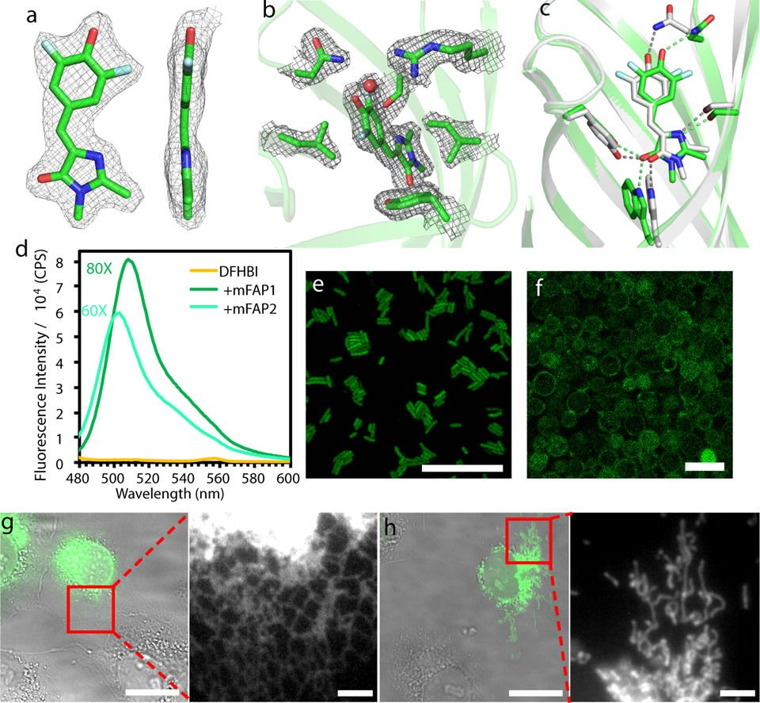
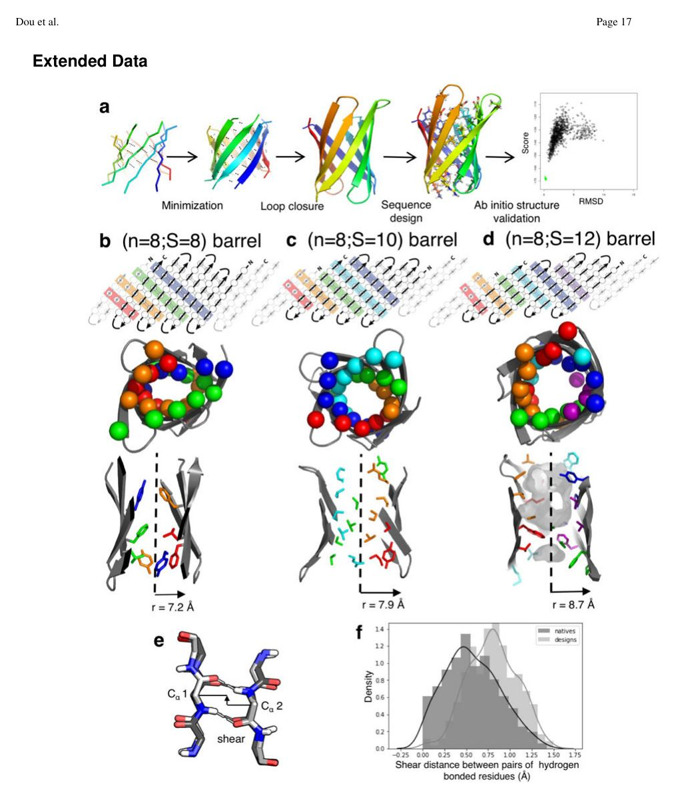
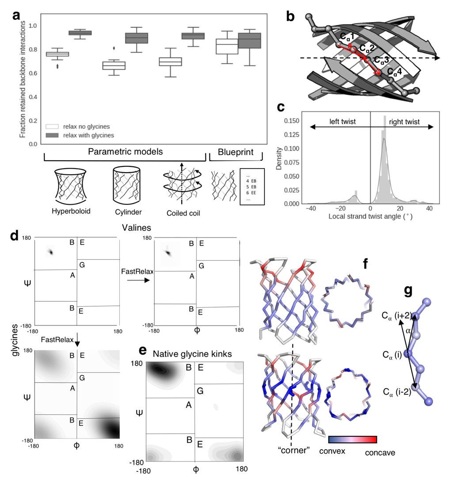
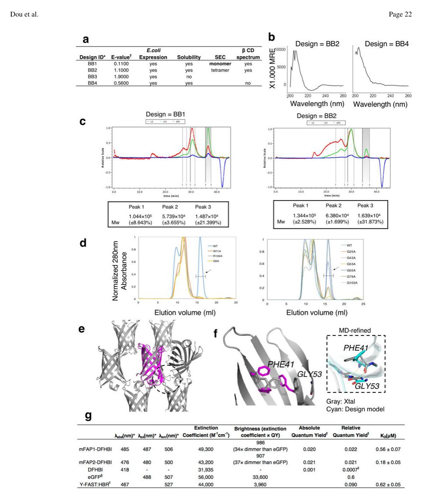
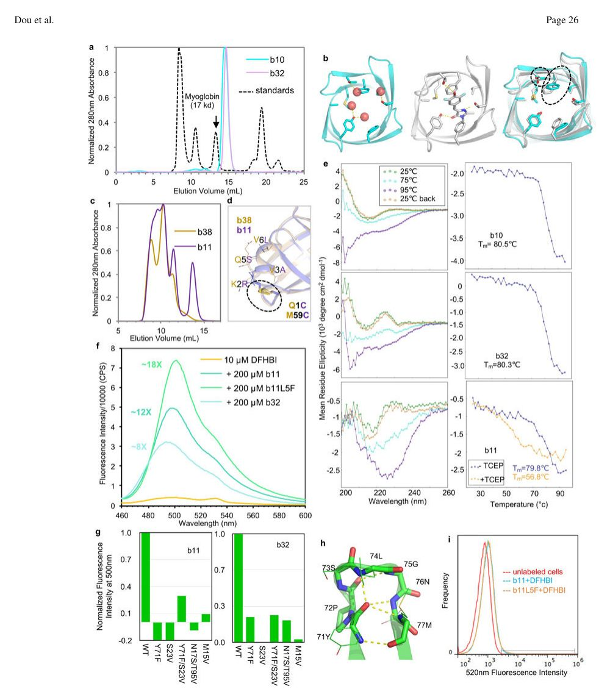
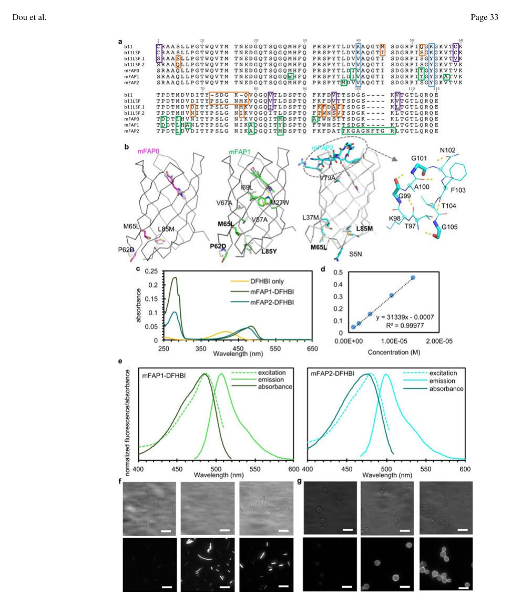
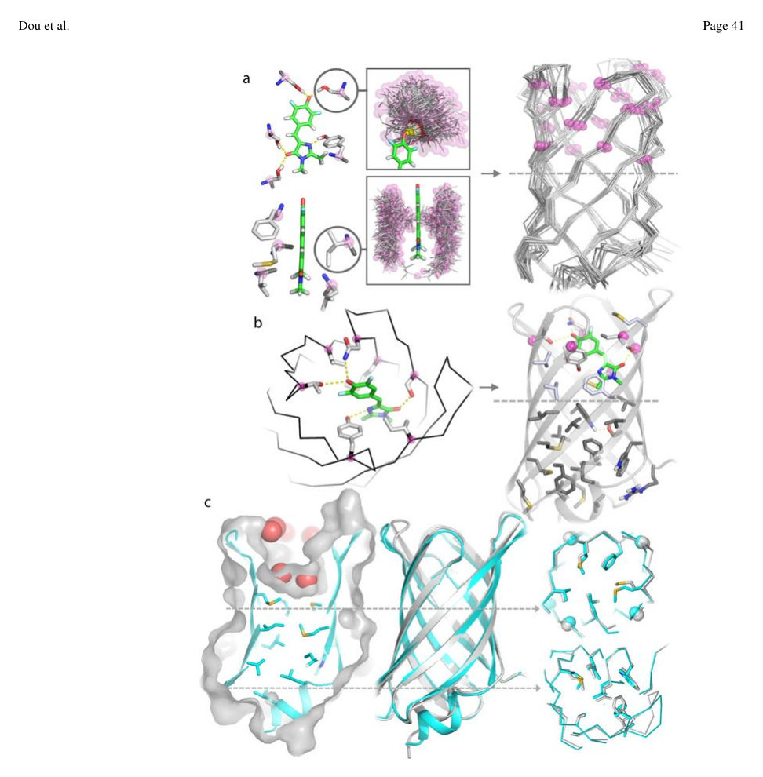
References
- Huang P, Boyken S, Baker D. The coming of age of de novo protein design. Nature 2016
- Principles for designing proteins with cavities formed by curved β sheets. Science 2017
- Tinberg C. Computational design of ligand-binding proteins with high affinity and selectivity. Nature 2013
- Bick M. Computational design of environmental sensors for the potent opioid fentanyl. Elife 2017
- Dou J. Sampling and energy evaluation challenges in ligand binding protein design. Protein Sci 2017. doi:10.1002/pro.3317
- Richardson J. Richardson DC Natural beta-sheet proteins use negative design to avoid edge-toedge aggregation. Proc. Natl. Acad. Sci. U. S. A 2002
- Polizzi N. De novo design of a hyperstable non-natural protein-ligand complex with sub-Å accuracy. Nat. Chem 2017. doi:10.1038/nchem.2846
- Lalonde J, Bernlohr D. Banaszak LJ The up-and-down beta-barrel proteins. FASEB J 1994
- Flower DR Structural relationship of streptavidin to the calycin protein superfamily. FEBS Lett 1993
- Richter A, Eggenstein E, Skerra A, Anticalins. exploiting a non-Ig scaffold with hypervariable loops for the engineering of binding proteins. FEBS Lett 2014
- Toda M, Zhang F, Athukorallage B, Elastic. 2018
- Novotný J, Bruccoleri R, Newell J, Hyperboloid. ) as a model of beta-barrels in proteins. J. Mol. Biol 1984
- Naveed H, Xu Y, Jackups R, Jr, Liang. Predicting three-dimensional structures of transmembrane domains of β-barrel membrane proteins. J. Am. Chem. Soc 2012
- Lasters I, Wodak S. Alard P & van Cutsem E Structural principles of parallel beta-barrels in proteins. Proc. Natl. Acad. Sci. U. S. A 1988
- Murzin A. Lesk AM & Chothia C Principles determining the structure of beta-sheet barrels in proteins. I. A theoretical analysis. J. Mol. Biol 1994
- Murzin A. Lesk AM & Chothia C Principles determining the structure of beta-sheet barrels in proteins. II. The observed structures. J. Mol. Biol 1994
- Salemme FR Conformational and geometrical properties of beta-sheets in proteins. III. Isotropically stressed configurations. J. Mol. Biol 1981
- Minor D, Jr, Kim. PS Measurement of the beta-sheet-forming propensities of amino acids. Nature 1994
- Fujiwara K, Ebisawa S, Watanabe Y, Toda H, Ikeguchi. Local sequence of protein β-strands influences twist and bend angles. Proteins 2014
- Lin Y. Control over overall shape and size in de novo designed proteins. Proc. Natl. Acad. Sci. U. S. A 2015
- Kuhlman B. Design of a novel globular protein fold with atomic-level accuracy. Science 2003
- Richardson J, Getzoff E, Richardson D. The beta bulge: a common small unit of nonrepetitive protein structure. Proc. Natl. Acad. Sci. U. S. A 1978
- Chan A, Hutchinson E, Harris D, Thornton. JM Identification, classification, and analysis of beta-bulges in proteins. Protein Sci 1993
- Hemmingsen J, Gernert K. Richardson JS & Richardson DC The tyrosine corner: A feature of most greek key β-barrel proteins. Protein Sci 1994
- Greene L, Hamada D. Eyles SJ & Brew K Conserved signature proposed for folding in the lipocalin superfamily. FEBS Lett 2003
- Paige J, Wu K. Jaffrey SR RNA mimics of green fluorescent protein. Science 2011
- Warner K. Structural basis for activity of highly efficient RNA mimics of green fluorescent protein. Nat. Struct. Mol. Biol 2014
- Allison B. Computational design of protein-small molecule interfaces. J. Struct. Biol 2014
- Zanghellini A. New algorithms and an in silico benchmark for computational enzyme design. Protein Sci 2006
- Rocklin G. Global analysis of protein folding using massively parallel design, synthesis, and testing. Science 2017
- Plamont M. Small fluorescence-activating and absorption-shifting tag for tunable protein imaging in vivo. Proc. Natl. Acad. Sci. U. S. A 2016
- Meech S. Excited state reactions in fluorescent proteins. Chem. Soc. Rev 2009
- Zhang Y. TM-align: a protein structure alignment algorithm based on the TM-score. Nucleic Acids Res 2005
- Merkel J, Regan. Aromatic rescue of glycine in beta sheets. Fold. Des 1998
- Conway P, Tyka M, Dimaio F. Konerding DE & Baker D Relaxation of backbone bond geometry improves protein energy landscape modeling. Protein Sci 2014
- Hauser C. Natural tri-to hexapeptides self-assemble in water to amyloid -type fiber aggregates by unexpected -helical intermediate structures. Proceedings of the National Academy of Sciences 2011
- Shaner N, Steinbach P. Tsien RY A guide to choosing fluorescent proteins. Nat. Methods 2005
- Gront D, Kmiecik S, Kolinski A. Backbone building from quadrilaterals: a fast and accurate algorithm for protein backbone reconstruction from alpha carbon coordinates. J. Comput. Chem 2007
- Huang P. RosettaRemodel: a generalized framework for flexible backbone protein design. PLoS One 2011
- Park H, Dimaio F, Baker D. The origin of consistent protein structure refinement from structural averaging. Structure 2015
- Davis I, Baker D. RosettaLigand docking with full ligand and receptor flexibility. J. Mol. Biol 2009
- Park H. Simultaneous Optimization of Biomolecular Energy Functions on Features from Small Molecules and Macromolecules. J. Chem. Theory Comput 2016
- Mandell D, Coutsias E, Kortemme T, Sub. angstrom accuracy in protein loop reconstruction by robotics-inspired conformational sampling. Nat. Methods 2009
- Procko E. Computational design of a protein-based enzyme inhibitor. J. Mol. Biol 2013
- Thyme S. Reprogramming homing endonuclease specificity through computational design and directed evolution. Nucleic Acids Res 2014
- Chao G. Isolating and engineering human antibodies using yeast surface display. Nat. Protoc 2006
- Whitehead T. Optimization of affinity, specificity and function of designed influenza inhibitors using deep sequencing. Nat. Biotechnol 2012
- Zhang J, Kobert K, Flouri T, Stamatakis A, Pear. 2014
- Fowler D, Araya C, Gerard W, Fields S, Enrich. software for analysis of protein function by enrichment and depletion of variants. Bioinformatics 2011
- Rubin A. A statistical framework for analyzing deep mutational scanning data. Genome Biol 2017
- Winter G xia2: an expert system for macromolecular crystallography data reduction. J. Appl. Crystallogr 2009
- Mccoy A. Phaser crystallographic software. J. Appl. Crystallogr 2007
- Adams P. PHENIX: a comprehensive Python-based system for macromolecular structure solution. 2012
- Emsley P, Lohkamp B, Scott W, Cowtan K, Features, Development, Coot. Acta Crystallogr. D Biol. Crystallogr 2010
- Afonine P. Towards automated crystallographic structure refinement with phenix.refine. Acta Crystallogr. D Biol. Crystallogr 2012
- Otwinowski Z, Minor W. Processing of X-ray diffraction data collected in oscillation mode. Methods Enzymol 1997